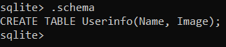

For week 3, I have mainly decided to use sqlite. It can be used with python to store image data from opencv. It can store
data using binary that can be easily transferred to an image if needed.
So I have created my frats.db database using sqlite3 for storing the image information. I have read up and researched
about my teammates roles and added a template file on using python to connect OpenCV with the database and the website for QiYang.
I also helped out by curating some opencv files and passing them to Reginald. I created a database table called userinfo on local disk.
